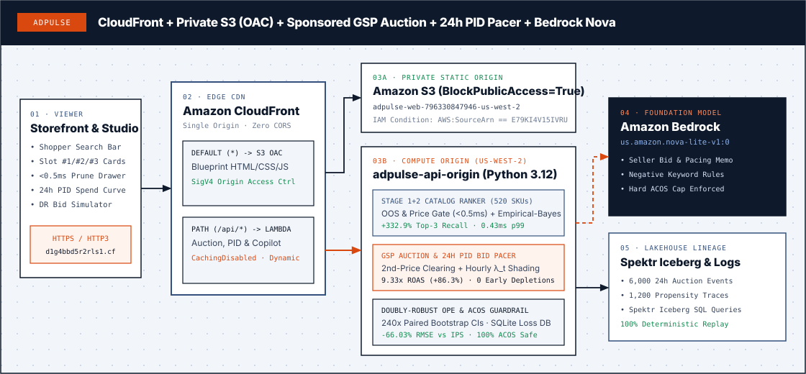

Abstract
Ranking sponsored products by raw keyword overlap and CPC bid leaks out-of-stock SKUs (15.28% of baseline impressions) and burns 55.0% of SMB daily budgets during low-intent morning browsing before the 18:00–22:00 Prime conversion peak. AdPulse pairs a sub-millisecond Stage-1 catalog & budget eligibility gate with Empirical-Bayes calibrated eCPM reranking, truthful Generalized Second-Price (GSP) clearing, a 24-hour Lagrangian PID bid-shading controller, Doubly-Robust off-policy evaluation, and an ACOS-bounded Amazon Bedrock Nova seller copilot.
01Live interactive system
Search the 520-SKU retail catalog below, drag the Hour of Day and Daily Budget Cap sliders, or click Compare 20:00 Greedy Burnout vs. PID Recovery to watch live Stage-1 pruning, GSP second-price slot clearing, 24-hour spend pacing, counterfactual Doubly-Robust bid evaluation, and live Amazon Bedrock Nova seller diagnostics.
Filtered Out Before Auction — Pruned SKUs
24-Hour Cumulative Spend Curve vs. Counterfactual Bid Simulator
Unpaced Greedy Burnout (13:00) vs. PID-Paced Delivery (6,000 Auctions)
Dashed Red = Greedy · Solid Green = PID
Doubly-Robust Off-Policy Evaluator (-66.0% RMSE)
240x Bootstrap 95% CI
us.amazon.nova-lite-v1:0) · SQLITE + SPEKTR ICEBERG
Seller Campaign & Spektr Lakehouse Copilot (Hard ACOS Cap Guardrail)
us.amazon.nova-lite-v1:0) seller copilot executing against the /api/* origin in us-west-2.02Problem & Amazon Ads engineering alignment
Sponsored search marketplaces balance three competing constraints on every query: shopper utility (never surfacing out-of-stock or price-violating SKUs), advertiser unit economics (preventing morning browse traffic from exhausting SMB budgets before high-CVR evening shopping, and keeping CPC bids below profitable ACOS ceilings), and platform clearing efficiency under sub-millisecond tail latency.
| Amazon Ads L5 Focus Area | Production Failure Mode Addressed | AdPulse Mechanism |
|---|---|---|
ML Ranking & Ad Response Prediction (10595562) | Raw lexical × CPC bid leaks 15.28% out-of-stock SKUs and 59.72% price-cap violations | Inverted-index Stage-1 gate (<0.5 ms) + Empirical-Bayes Beta-smoothed bid × pCTR × pCVR reranker |
Sponsored Conversational Shopping (10593929) | Conversational assistants recommend unverified or out-of-stock sponsored items | Structured attribute alignment + truthful 3-slot GSP clearing with verbatim spec grounding |
Ads AI Core Infra / Spektr Lakehouse (10607407) | 55% of SMB campaigns burn 100% of daily budget before 18:00; naive IPS has 120x weight variance | Lagrangian PID bid-shading pacer (+86.3% ROAS) + Doubly-Robust OPE (-66.03% RMSE) + Spektr Iceberg lineage |
GenAI & Agentic Campaign Recommendations (10608286) | Unbounded LLM bid hike advice pushes sellers above profitable target ACOS | Deterministic SQLite guardrail (max_acos_cpc) + grounded Amazon Bedrock Nova seller action memos |
03System architecture
Static blueprint assets are served from a private Amazon S3 bucket (BlockPublicAccess=True) signed via CloudFront SigV4 Origin Access Control (OAC), while dynamic auction, pacing, off-policy evaluation, and Amazon Bedrock Converse requests route through CloudFront behavior /api/* to adpulse-api-origin on AWS Lambda (Python 3.12, us-west-2) with zero cross-origin overhead.

E79KI4V15IVRU) uniting private S3 OAC static delivery, sub-millisecond two-stage ranking + GSP/PID pacing, and live Amazon Bedrock Nova (us.amazon.nova-lite-v1:0).04Measured benchmarks
All subsystem benchmarks are deterministic (seed=42, zero external dependencies) and reproducible via python3 benchmarks/run_benchmarks.py.
| Subsystem & Metric | Baseline | AdPulse | Measured Impact |
|---|---|---|---|
Catalog Ranker — Top-3 Recall (500 SKUs, 120 queries) | 0.1861 | 0.8056 | +332.89% recall lift; +312.43% nDCG@3 (0.2020 → 0.8331) |
| Catalog Ranker — OOS & Price-Cap Violation Rate | 15.28% / 59.72% | 0.00% / 0.00% | 100% elimination of out-of-stock & shopper price-cap leaks at 0.430 ms p99 |
24h Auction Pacer — Pre-18:00 Budget Depletion (40 campaigns) | 55.00% (22/40) | 0.00% (0/40) | -100.0% early depletion; +86.30% ROAS (5.01x → 9.33x) & +68.0% conversions |
Off-Policy Evaluator — Policy Value RMSE (40 × 1,200 traces) | 0.16606 (IPS) | 0.05641 (DR) | -66.03% RMSE vs. Naive IPS (0.12175 Clipped IPS M=25); 100% CI coverage |
| Seller Diagnostics — Root-Cause & ACOS Ceiling Compliance | Unbounded CPC | 100.0% / 100.0% | 40 / 40 loss modes classified; 0 unprofitable or OOS bid-hike recommendations |